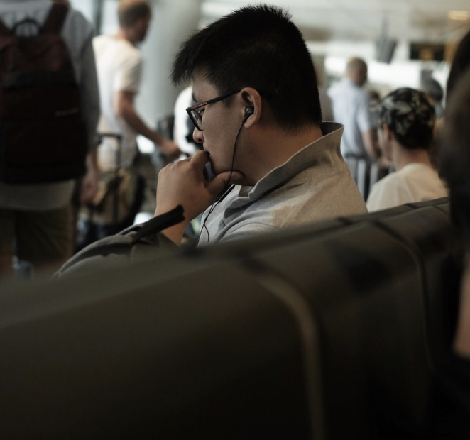

¡Hola!
Soy Francesca, diseñadora UX/UI. En el año 2018, cogí mi maleta y decidí revolucionar mi vida. Encontré mi pasión, conocí mis debilidades y las junté. Desde ahí nace mi enamoramiento hacía el diseño y la fotografía.
"Probar para encontrar"
Proyectos

Walkee - Case Study
Experiencia
2019-Acon100cia Showroom
Brand Lead Assistant
- Identificar y resolver las necesidades del cliente
- Llevar a cabo planes para satisfacer las expectativas de los clientes
- Aumentar la satisfacción del cliente
- Servicio y atención post-venta
- Comunicación
- Gestión de las incidencias entre clientes y proveedores
- Traducción de informes de las colecciones (esp-ita)
Fotografía
Descubre mi mirada


Contacto
Para cualquier pregunta, escribe a hi@francescatozzi.com